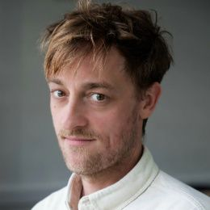

Karl Toomey
Labs Director
Karl leads Labs, where we try ideas out small before anyone commits. He’s interested in joyful innovation, and lectures at IADT, NCAD and LABASAD.
Working on
An innovation starter kit for Tailte Éireann.
Ask Karl about
Trying an idea out smallData and privacyFutures and What if…?
Talk to Karlhello@wove.group
Karl’s work
Who Do They Think You Are?
31 Days of Being More Human
How do you build a brand that makes circular living feel desirable and accessible?
How citizen workshops helped us understand what circularity means for people
Shaping Ireland’s Creative Future
Nice coverage of our data privacy game
Cat, Ciara and Erin went to the launch of Dublin Dance Festival’s 2026 programme
What if kids helped us connect with art in richer ways?
What Irish design students told us about the future of education